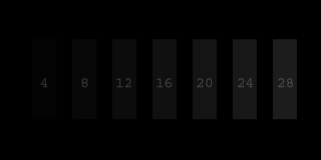
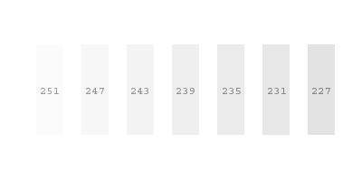
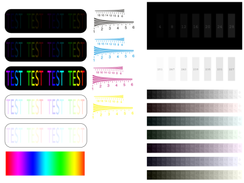

1. To successfully calibrate your monitor you should first provide some environment conditions:
.:. set your preffered resolution and maximum color depth (32 bit, true color)
.:.
try to ensure that your monitor is dominant light source at the moment
of calibration, or at least that no light source is headed towards
monitor
.:. most CRT monitors have DEGAUSS function - use it before calibration.
2. Setting the black level:
.:. set the CONTRAST control to its highest value
.:. after that, use the BRIGHTNESS control to set the below picture to
achieve that you can clearly see borders of vertical stripe labeled 12,
and you barely see borders of stripe 8 while stripe 4 is blending in
the background

Once
the black level is set, there is no need to change the value of
BRIGHTNESS control (except to recalibrate monitor again).
3. Setting the white level:
.:. using the CONTRAST control lower its value until you achieve that
border of stripe 251 is visible, and the background is clearly white.

The end! Your monitor is now properly calibrated, and you can enjoy viewing graphics and photos on it. Try my photo gallery, you may find some photos you like.
This short procedure is usually good enough to get proper calibration, but if you're still in doubt you can use this chart to determin real problem.

{kind=link}